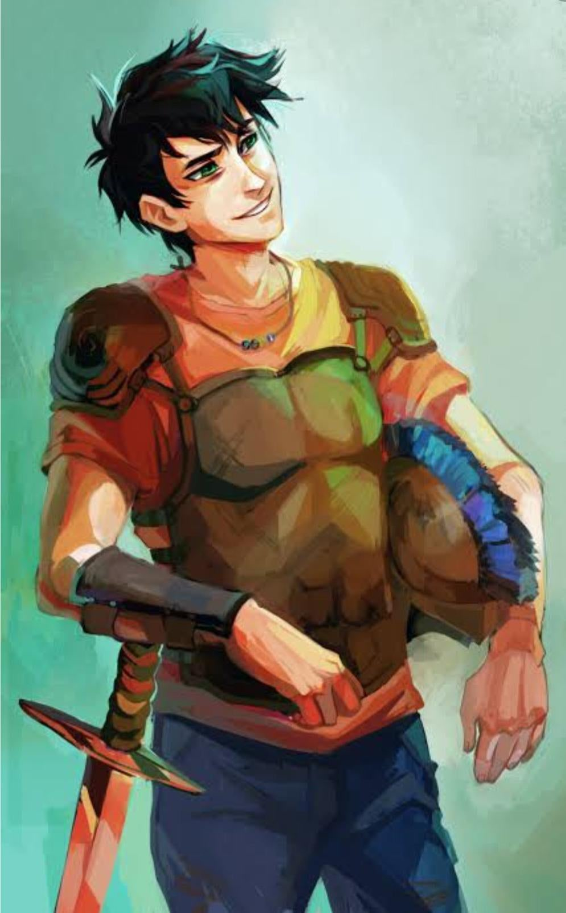

Wiki del Campamento Mestizo
Percy Jackson
Perseo "Percy" Jackson es el protagonista principal y narrador de Percy Jackson y los Dioses del Olimpo, así como también uno de los personajes principales de Los héroes del Olimpo. Es un semidiós griego hijo de Poseidón y la mortal Sally Jackson. Es el actual capitán de la Cabaña de Poseidón y ex-pretor de la Duodécima Legión en el Campamento Júpiter. Es interpretado por Logan Lerman en las adaptaciones cinematográficas de El ladrón del rayo y en El mar de los monstruos.
Historia
Perseo -apodado Percy- Jackson nació el 18 de agosto de 1993 en Long Island, Nueva York.[1] Fue criado por su madre soltera, Sally. Su madre lo nombró Perseo, porque Perseo fue uno de los pocos héroes de la mitología griega que tuvieron un final feliz. Los padres de Sally (los abuelos de Percy) Jim y Estelle Jackson, murieron trágicamente en un accidente de avión cuando Sally tenía cinco años y el problema causante del accidente fue desconocido. Al quedarse huérfana, Sally fue adoptada por su tío paterno, Rich, quien murió de cáncer años más tarde. Su madre conoció a su padre Poseidón a finales de 1992, y le llamó la atención debido a que este portaba un tridente. Poseidón se percató de que Sally podía ver a través de la niebla y le reveló quien era en realidad. Ambos se enamoraron y pasaron el verano juntos. Algún tiempo después nacería Percy.
Cuando era un bebé, Poseidón lo abandonó a él y a su madre para protegerlos de los monstruos. Aunque Percy jamás lo conoció, Poseidón le visitó varias veces cuando estaba en su cuna y Percy recordaba vagamente ver algo similar a un "resplandor de oro" y la cálida sonrisa de un hombre. Por su parte, Sally siempre le dijo a Percy que su padre no estaba muerto, sino "perdido en el mar", dejando que Percy sacase sus propias conclusiones. Cuando era pequeño, su madre se casó con Gabe Ugliano, a quién Percy odiaba y le apodó "Gabe el Apestoso", por su horrible olor corporal.
La vida de Percy siempre estuvo plagada de peligros y muchas cosas extrañas siempre ocurrían alrededor de él, las cuales le causaban muchos problemas. Cuando era apenas un bebé, Percy fue atacado por una serpiente en su cuna, pero de alguna manera se las arregló para estrangularla hasta la muerte. Cuando estaba en tercer grado, un hombre gigantesco le siguió hasta su escuela, pero con la amenaza de llamar a la policía por parte de los maestros consiguió que el hombre se fuera. Sin embargo, nadie le creyó cuando dijo que el hombre tenía un solo ojo. Cuando estaba en cuarto grado, golpeó accidentalmente la palanca de mano de la pasarela cuando su escuela se encontraba de visita en el parque Sea World, junto a la piscina de los tiburones, e hizo que todos recibieran un baño no planificado. Luego, en quinto grado, disparó accidentalmente un cañón de la guerra civil que destruyó el autobús escolar. Percy relató que fue expulsado de seis escuelas en el transcurso de seis años.
Percy Jackson
Titulos
Salvador del Olimpo
Héroe del Olimpo
Hijo de Poseidón
Caracteristicas Vitales
Nacimiento: 18 de Agosto de 1993, Long Island, Nueva York
Edad: 17
Alias: Percy, El hijo de Poseidón, Sesos de alga, Peter Johnson
Género: Masculino
Especie: Mestizo
Estatus: Vivo
Color de Pelo:Negro
Color de ojos:Verdes
Color de Piel: Clara
Estatura: 1,83m
Cita Destacada